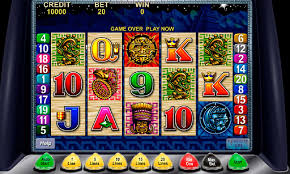

Play Best Casino Games Without Leaving Home
There are countless benefits to playing casino games online, but there are some that are more appealing than others. For one, these games don't require you to leave your home. And even if you don't have a lot of money, you can still enjoy some of the most popular titles without ever leaving your home. You can play the best casino games with the best odds, and you can always practice in your own home.
The first reason to play these games is the ease of access. There are many free casino games available on Google Play. You can choose the one that best suits your needs. Then, you can try out the different games offered by different casinos. Depending on the type of game, you can try out as many as you want. Moreover, you can also check out the different bonuses and promotions. These bonuses can make your experience even better. slot online

If you'd rather play for real money, then you can look for casino apps that offer free play. However, be aware that you'll be asked for some personal information, which may be more than you're comfortable with. When you sign up for a casino app, you'll receive a username and password to access your account. You can also fund your account using a number of options. You can even fund your account with your credit card.
Another option is to download free casino games from online providers. Many of these apps are free to download, and you'll be able to play for real money. You'll be able to use your Facebook account or email address to log in. There are also many mobile games that you can use to play. You can also sign up for a free account with an online casino to play their favorite games. The only difference is that you'll need to have a physical casino nearby.
There are several free casino apps for Android. Some are more convenient than others, and they're easy to download. The best casino app will allow you to access the same variety of games as you would in a brick-and-mortar casino. Regardless of the platform, you'll be able to play your favorite casino games with ease and no trouble. Just remember to read the terms and conditions and be patient. slot
When you visit a brick-and-mortar casino, you might feel intimidated by the crowds and noise. You might not know how to play the games, and you might not know how to interact with the staff. But you can play the best casino games without leaving your home. These apps have several advantages. Firstly, they are free to download and use, so you can start playing right away. And you'll never have to leave the comfort of your home.